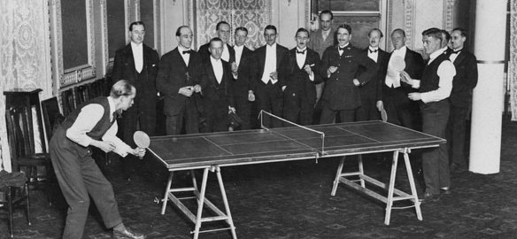

La storia del ping pong risale alla fine dell'800, in particolare al 1884, quando comparve il "tennis da tavolo" (poi successivamente abbreviato in Tennis Tavolo) in un catalogo di prodotti sportivi del venditore internazionale F.H. Ayres. I primi modelli di tavoli da ping pong erano sviluppati in legno; le palline, non esistendo ancora la miscela plastica, erano in sughero e gomma. Con l'arrivo delle materie plastiche e della celluloide vennero prodotte le prime palline simili a quelle che oggi si trovano in vendita nei negozi. Le vecchie palline in sughero e gomma andarono in pensione e fu proprio dal rumore prodotto dal rimbalzo dei queste nuove palline che il termine Ping Pong venne alla luce. Oggi il termine PING PONG è addirittura un marchio registrato! Il termine alternativo a PingPong è Tennis Tavolo, anch'esso molto usato, tanto che il giocatore di pingpong non è il "pingpongista" ma il "tennistavolista". Va detto però che a volte viene usata anche la parola "pongista". Alla fine dell'800 anche l'attrezzo impiegato per colpire la pallina venne riprogettato e da una specie di tamburello si passò all'attuale racchetta da ping pong. Le prime racchette erano interamente in legno senza gommatura esterna. Negli anni a seguire arrivarono i primi rivestimenti dell'anima in legno, con sughero o tela gommata per fornire elasticità. Intorno al 1950 il ping pong subì una grande evoluzione con l'introduzione delle famose coperture "Sandwich", che oltre a migliorare la dinamica di gioco portarono il ping pong ad essere molto più giocabile, rendendolo famosissimo e popolare in tutto il mondo in pochissimi anni. Il numero di appassionati di ogni livello, dall'agonistico al dilettantistico, crebbe incredibilmente e oggi il ping pong è uno sport amato e conosciuto ovunque.
In Italia il Ping Pong prese valenza di disciplina sportiva quando nacque la Federazione Italiana di Tennis Tavolo, che durante la prima Assemblea Generale del 1960 si diede un apparato organizzativo vero e proprio. La federazione salì però allo stesso rang delle altre federazioni sportive italiane solo nel 1979, quando il CONI la riconobbe formalmente come FITeT (Federazione Italiana Tennis Tavolo) . Oggi in Italia il ping pong è praticato sia a livello agonistico sia a livelo amatoriale, grazie all'ampia scelta di tavoli da ping pong per interno ed esterno di ogni fascia di prezzo.
Quando si parla di tennis tavolo, vengono sempre in mente i famosissimi campioni cinesi e giapponesi, e tutti i giocatori conoscono la presa della racchetta alla "Giapponese". Malgrado tutti pensino che il tennis tavolo trovi la sua culla in queste aree orientali, in Cina il tennis tavolo sembra essersi sviluppato e diffuso qualche decennio dopo la famosa pubblicazione del primo tavolo nel catalogo Ayres. Dalla Cina raggiunse poi il Giappone e la Corea. Nacque così in tutta l'Asia una grande scuola culturale di tennis tavolo, dando vita allo stile di impugnatura della racchetta famoso come "impugnatura a penna" perché ricorda la posizione delle dita durante la scrittura. Lo stile di gioco derivato da questa impugnatura è la principale differenza tra le scuole di pingpong d'Occidente e d'Oriente. Stile vincente considerando che, tranne qualche piccola eccezione, le gare più prestigiose ed i campionati mondiali di ping pong sono sempre stati vinti da atleti orientali. La Cina in particolare è la nazione che vanta il più alto numero di adepti, seguita dal Giappone e dalla Corea.
